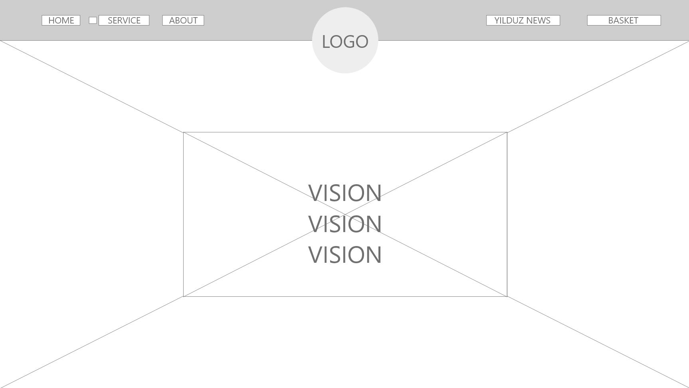

User testing round #1 (Adobe XD prototype)
Testing plan:
Research question: What can we improve to make our website more user friendly to our future consumers?
Purpose of our test: Define possible problems, improvements, test the usability of our app. We will address the purpose of our app by letting our users experience the prototype.
Methods and scenario: We will tell our participants about the main focus of our platform, its products and services. We will also provide participants with the information that a free guide will be available. The scenario we will tell our participants is the following: “You are busy handing in an assignment you worked days on, it's 3 hours before the deadline. When you’re handing it in CumLaude suddenly jams and your laptop looks completely dead, you're so stressed that you can’t think clearly, you decide to reach out for help to get your stress levels down.”
Requirement strategy: We tested the app at a sample size of one test subject. To stay as close to our target audience as possible we searched for test subjects in school, so they are likely to have experienced stress.
Goal: Go from the home page to the Yilduz news page, read an article. After that go to the service page and add service two to the chart.
After they tried our prototype, we follow up with these questions:
- Do you think this website would work for you?
- Why would this (not) work for you?
- Did you understand every step of the testing process?
- Do you have any improvements?
Usability report Plan: we planned out that every user would take about two minutes to reach the goal. In practice, we found out that it took the participants more time. During the testing we found out our app still needs to have a lot of work perfecting it. Not only the layout and graphic features. But also, some technical changes.
We can conclude that every test subject could interact with the app and eventually everyone succeeded to finish the goal. Out of observation and the answers to the questions we asked we came up with the following findings:
Next prototype iteration and recommendations (action list)
- Create an option to add multiple services (products) at the same time.
- Make the app more practical and clearer for the eye.
- Make the ‘add to chart’ function more visible.
- Make the design more coherent.
- From news to services needs to be connected properly.
User testing round #2
(Adobe XD Prototype improved version)
testing plan:
Research question:
What can we improve to make our website more user friendly to our future consumers?
Purpose of our tests:
Define possible problems, improvements, test the usability of our app. We will address the purpose of our app by letting our users experience the prototype.
Methods and Scenario:
We will tell our participants about the main focus of our platform, its products and services. We will also provide participants with the information that a free guide will be available. The scenario we will tell our participants is the following: “You are busy with handing in an assignment you worked days on, its 3 hours before the deadline. When you’re handing it in CumLaude suddenly jams and your laptop looks completely dead, your so stressed that you can’t think clearly, you decide to reach out for help to get your stress levels down.”
Requirement strategry:
we tested the app at a sample size of one different test subject. To stay as close to our target audience as possible we searched for test subjects in school, so they have experienced stress.
Goal:
Go from the home page to the service page, add service 2 to your basket and after that, you read an article on the yilduz news page.
After they tried our prototype, we follow up with these questions:
- Do you think this website would work for you?
- Why would this (not) work for you?
- Did you understand every step of the testing process?
- Do you have any improvements?
We created a digital prototype in Adobe XD and met with our participants on campus. The recordings of our testing can be found in the appendix.
Usability report:
Plan: we planned out that every user would take about two minutes to reach the goal. In practice, we found out that it took the participants more time. During the testing we found out our app still needs to have a lot of work perfecting it. Not only the layout and graphic features. But also, some technical changes.
We can conclude that every test subject could interact with the app and eventually everyone succeeded to finish the goal. Out of observation and the answers to the questions we asked we came up with the following findings: